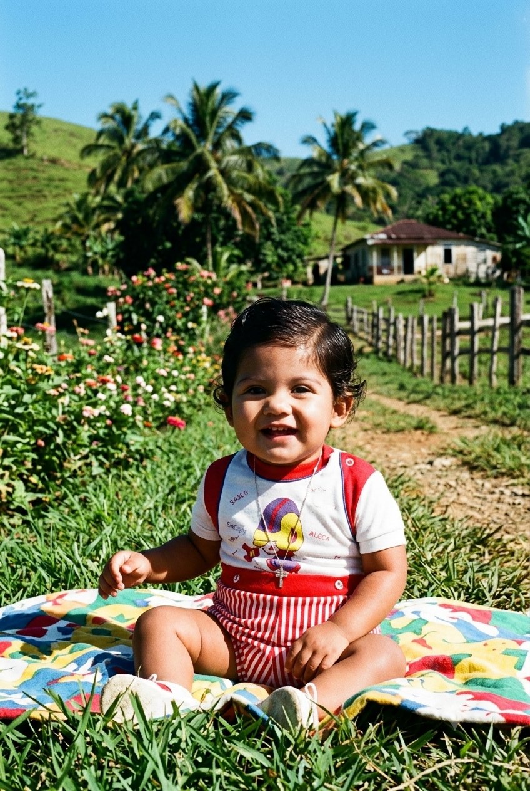

Learn
Stay curious. Keep expanding what is possible.
About
The story behind the systems.
Long before there were businesses,
applications, music, or worlds,
there was curiosity.
A desire to understand how things work,
why they work, and what becomes possible
when ideas are given enough time to grow.
The future is not something we wait for. It’s something we build.

The Builder Behind The Workshop
Long before there were businesses, applications, or websites, there was a fascination with how things work.
Computers, systems, tools, organizations, people, and ideas.
That fascination never disappeared.
It simply became a workshop where curiosity is tested, refined, and turned into systems.
Capability
Stay curious. Keep expanding what is possible.
Turn ideas into real-world systems.
Iterate, refine, and never stand still.
Take responsibility for the outcome.

Freedom Through Ownership
In 2021, I founded ELE Survival. What started as a small idea became a real business built around preparedness, self-reliance, and personal responsibility. But ELE was never just about products. It was about ownership: building something from nothing, serving customers directly, and creating value without needing permission.
Visit ELE SurvivalThe Digital Workshop
Creativity & Hidden Worlds
Some things exist because they are interesting.
The Thread
Different worlds. One vision. Building systems that create leverage, preserve memory, and push human potential forward.
Independence
Continuity
Capture
Progress
Creativity
AI Companion
Stories & Wisdom
Looking Forward
New ideas arrive. Old ideas mature. Some experiments fail. Others become something larger than expected. I’m still learning. Still building. Still exploring.
Stay curious. Build useful things. Preserve what matters.